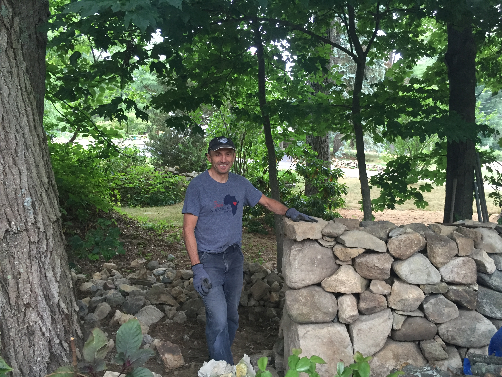
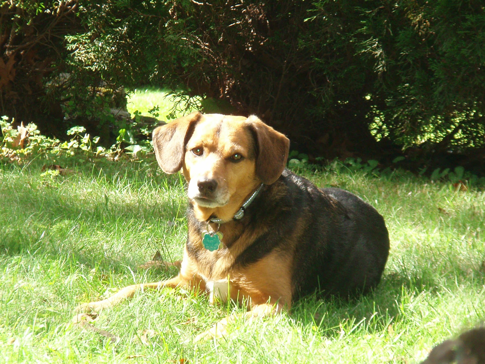

<mat-card >
    <mat-tab-group color="primary" style="height: 420px" >
        <mat-tab color="primary" label="Portfolio">
            <div id="my-images" >
            </div>
        </mat-tab>
    <mat-tab label="About Us">
        <h1 align="left">Welcome to the BigOooo</h1>
        <p>
        
        </p>
        <p align="left">I started building dry stone walls after taking a couple classes at the <a target="_blank" href="https://thestonetrust.org/">Stone Trust.</a> Since then I have built several stone walls you can view in my portfolio. Building dry stone walls is truly a labor of love. The sense of accomplishment is undescribable. Especially knowing that, done correctly, it will be be around for generations to come. I would now like to expand and start building them for others. I am going to start out by offering them at a discounted rate. If you are someone that loves the natural look you will not be dissapointed with a dry stone wall.</p>
        <p align="left">
        How did we come up with our name?</p> 
        <p align="left">
        The Big "O" is the nick name we gave my dog. His actual name is Otto. But we sometimes call him The Big O. I have built several stone walls since taking my class and each time I show them I get the same response, "Oooooooo that is nice" or "Oooooooo that is beautiful". We decided to put the two together for our company name.
        </p>
        <p align="center">
        <font size=6>BigOooo!</font>
        </p>

        <p align="left">Here he is looking dapper!</p>

        <p>
        
        </p>

    </mat-tab>
    </mat-tab-group>
</mat-card>
